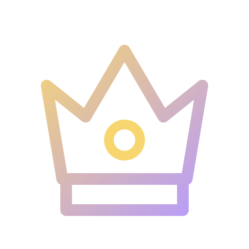

Official guild identity
Lumina
- Game
- Tibia
- World
- Secura
- Community
- International
- Guild systems
- Luminox Founder
Guild · Members
Lumina members play Tibia on Secura, belong to the official guild and use our Discord as the shared home for activities, support, progression and guild decisions.
Where we play
Our in-game home is Tibia, the long-running MMORPG created by CipSoft. Lumina plays on the world Secura, while Discord gives the guild a reliable place for information, organization and community life outside the game client.
Membership is not created by a Discord role alone. A full Lumina member has an accepted character in the official Tibia guild, verifies that character through Luminox and receives the Discord access that corresponds to the character's current guild rank.
Use Tibia.com to verify that Lumina exists, inspect its current members and see the guild ranks published by the game itself.
Official guild identity
Member benefits
Membership opens the systems and shared spaces Lumina built for its own community. The objective is to make participation easier, progress more visible and help available when a member needs it.
Join hunts, bosses, quests, guild events and scheduling discussions through clear boards with participants, reserves and archived threads.
Your registered character, main identity, Tibia rank and Discord access remain connected instead of depending on a manually maintained nickname.
Loyalty, GuildBank, recruitment, events, streaming and other eligible activity can become transparent account-wide progression.
Registration questions, complaints and sensitive requests can reach the responsible staff through private, role-aware Support threads.
Members can use the guild's social, voice, roleplay and information spaces while meeting players from different countries and play styles.

06Lumina's official Discord runs Luminox Founder Edition: the complete internal system shaped and tested through the guild's real daily activity.
What membership means
Lumina works when members treat one another, the game world and the guild's systems with respect. Membership is not a promise of free items, guaranteed teams or personal staff service at every moment.
Member journey
Your character joins Lumina through the guild's normal application or invitation process.
You register the Secura character in Discord and prove ownership through Tibia.com.
Luminox connects the account, main character, guild rank, nickname and managed access.
You can use the member systems available in Lumina and build your own guild history.
See the real guild
The official Tibia page shows the current guild. Our joining guide explains what happens before and after an accepted application.